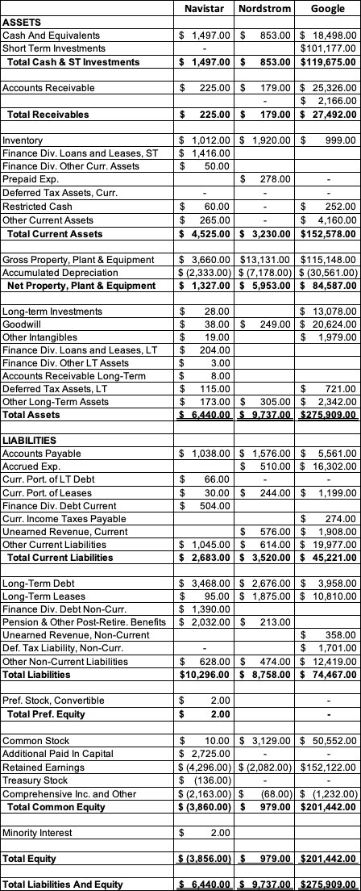

← 会计101 · 分讲阅读 · 站主随笔
NYU Stern · Damodaran《Accounting 101》· 第 3A 讲
本讲视频：Balance Sheets: Illustrations（YouTube，约 12–20 分钟）· 原始幻灯：session3A.pdf
资产负债表是一家公司全部历史的累积结果——但历史该按投入成本记还是按公允价值记，会计人自己都吵了几十年。结果是今天这张表两头不沾：既不是投入资本，也不是公允价值。真正还能拿来用的，只剩 Cash & marketable securities 和 Debt 两行。
这一讲没有讲道理，全是报表。Damodaran 挑了七家形态截然不同的公司，把它们的资产负债表并排放在一起看：Peloton（招股书里的年轻公司）、Netflix（高速成长）、Coca-Cola（成熟）、Toyota（老化）、Total（资源型）、HSBC（金融服务）、Dr. Reddy's（制药）。 他给的框架是「企业生命周期」——同一张资产负债表，在初创、成长、成熟、衰退四个阶段会长出完全不同的样子；而行业不同，资产端和负债端出现的东西也不同（油企大量资产藏在联营公司里，银行最大的资产是贷款而不是现金）。 最后的结论很不客气：今天的资产负债表是一团乱麻，既不衡量投入资本，也不反映公允价值；真正还能用的只有两行——Cash & marketable securities 与 Debt。

第 1 题
这三家公司的 net property, plant and equipment（Net PP&E）是用 gross property, plant and equipment（Gross PP&E）减掉 accumulated depreciation 算出来的。请分别估算每家公司的 Net PP&E 占 Gross PP&E 的百分比，并解释为什么三者不同。
Navistar 的 Net PP&E 占 Gross PP&E 比例最低，这既反映了它的年纪（老公司通常比年轻公司核销掉更多资产基础），也反映了它的资产类型（实体验证设备折旧得更快也更彻底）。数据（百万美元）：Gross Property, Plant & Equipment 分别为 3,660.00 / 13,131.00 / 115,148.00；Accumulated Depreciation (2,333.00) / (7,178.00) / (30,561.00)；Net Property, Plant & Equipment 1,327.00 / 5,953.00 / 84,587.00；Net PP&E as % of Gross PP&E 36.26% / 45.34% / 73.46%。
第 2 题
估算这三家公司的营运资金（working capital，流动资产减流动负债），并分析三者之间的差异。在财务分析中，你要怎样修改营运资金的定义，才能让它更有意义？
营运资金的常规定义表明 Google 的营运资金需求最大，而 Nordstrom 的营运资金为负。但现金与有价证券在 Google 的流动资产里占了大头，而且三家的流动负债里都有一部分是短期债务。一个更有意义的口径是：用非现金的流动资产减去非债务的流动负债。这一调整对 Google 影响巨大。数据（百万美元）：Current Assets 4,525.00 / 3,230.00 / 152,578.00；Current Liabilities 2,683.00 / 3,520.00 / 45,221.00；Working Capital 1,842.00 / (290.00) / 107,357.00；Non-cash Current Assets 3,028.00 / 2,377.00 / 32,903.00；Non-debt Current Liabilities 2,587.00 / 3,276.00 / 44,022.00；Non-cash & non-debt working capital 441.00 / (899.00) / (11,119.00)。
第 3 题
Navistar 的股东权益是负数。你会怎么解释？
e. 以上都是。大额重组费用、经营亏损、支付超过盈利的股息、以及大举回购股票，这四件事都会消耗股东权益。
第 4 题
Google 在资产负债表上报告了 206 亿美元的商誉（goodwill）。这个项目给你提供了关于这家公司的哪些信息？
c. Google 做了一笔大额收购，为目标公司支付的价格显著高于其账面价值。目标公司可能确实拥有大量无形资产，也可能是 Google 出价过高，但单看 goodwill 这一个项目，你得不到这些信息。
第 5 题
Navistar 在负债端列示了金额可观的养老金及退休后福利义务。这项金额衡量的是什么？
b. 资金不足的养老金基金与退休后福利义务（用养老金基金资产抵减后的义务净额）。在有些国家，公司把养老金基金资产放在资产端、把养老金基金负债放在负债端分别列示；但 Navistar 这一项只出现在负债端，就说明它是资金不足的养老金义务。